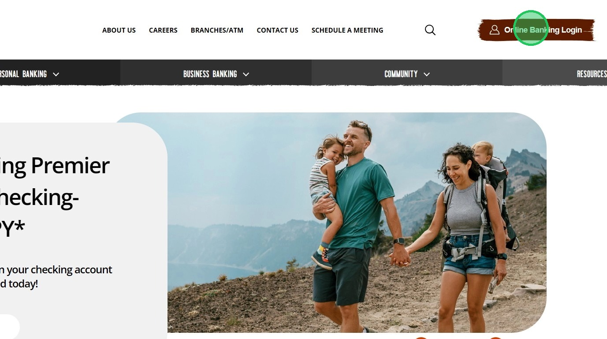
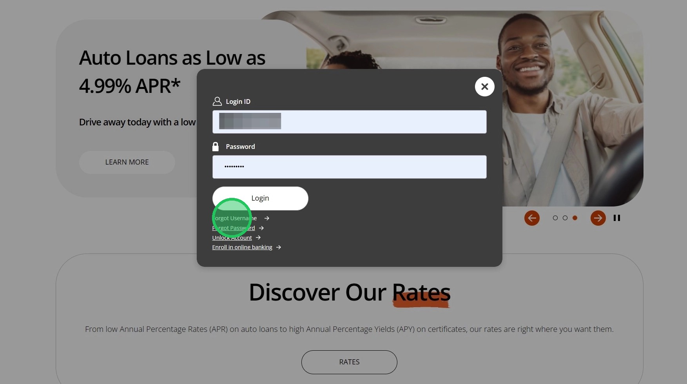
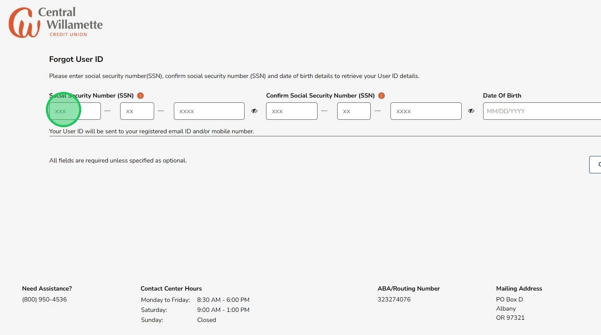
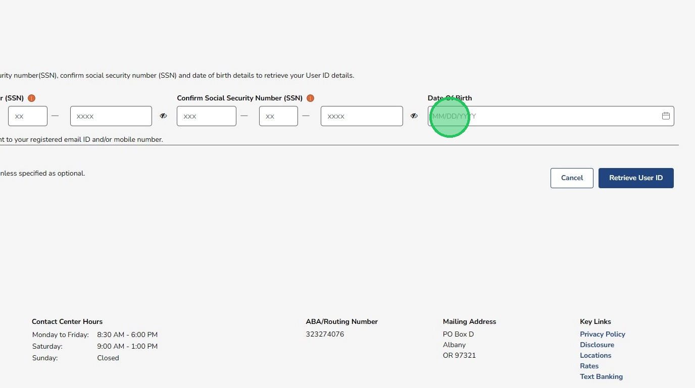
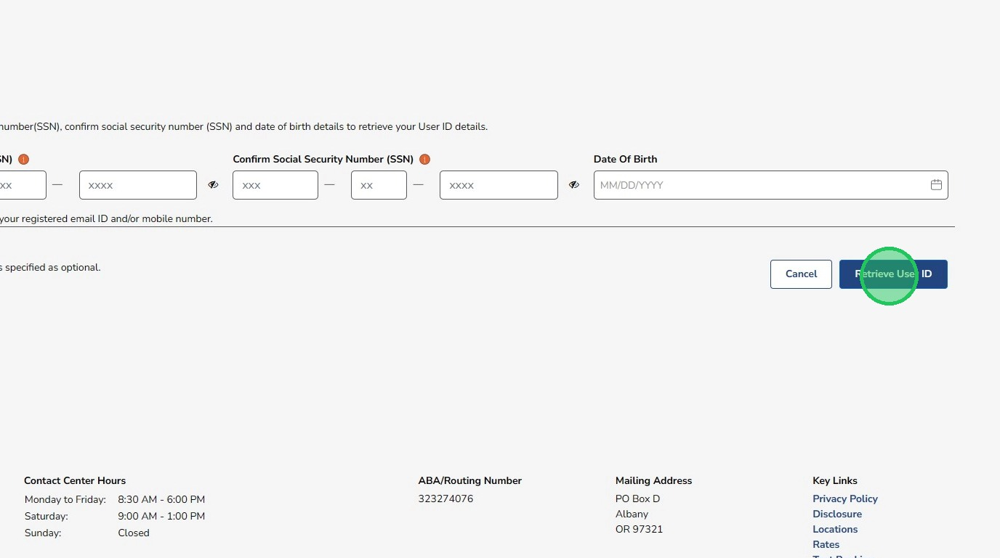

Retrieve Your Username for Online Banking
If you forgot your username for online banking, you can retrieve it by following these steps. Your username is needed to sign in to your account.
1
Go to the Online Banking Login page.

2
Click "Forgot Username"

3
Enter your Social Security Number.

4
Enter your Date of Birth.

5
Click "Retrieve User ID". Your username will be sent to your email or phone number that you have on file.
